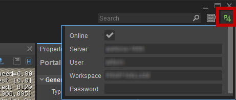
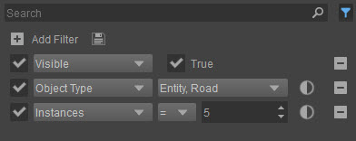
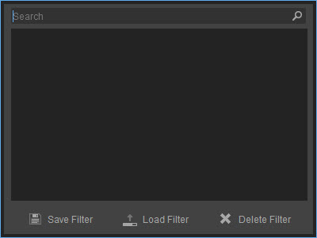
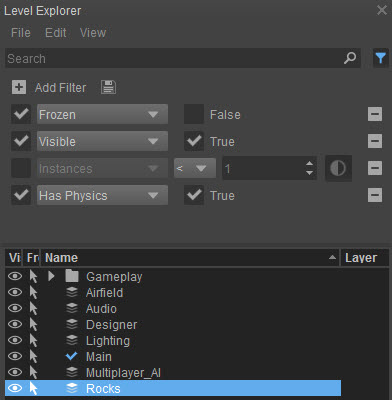
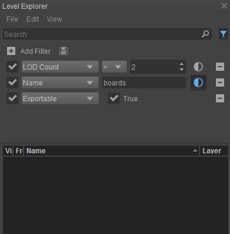
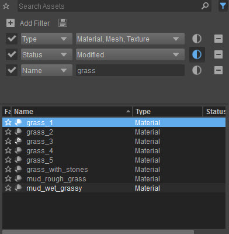

Overview
In update 5.3, the following features were added to the main UI:
Perforce Connection Settings
In the top-right corner of the UI, you will see a new button:

Clicking this button will show a new pop-up window in which you can view and change your Perforce connection settings.
This means you won't have to open the command prompt and type out entire commands to change e.g. your Workspace.
This will change the connection settings in Perforce. Be careful when changing these settings if you have other software that uses Perforce.
Advanced Search Bar
The Level Explorer and the new Asset Browser have an evolved version of the standard search bar: the Advanced Search Bar:

In future releases, this Advanced Search Bar will be implemented in other tools as well, but for now, only the Level Explorer and Asset Browser have one.
Creating Filters
For more control over the search results, you can create any number of filters by first clicking the Filters button
Add more filters to make your filter more specific.
The screenshot above was taken from the Level Explorer, for example, so there are numerous aspects of objects, entities, etc. that you can filter by.
For example, the filters above will filter out any visible Entities or Roads of which there are exactly 5 and show them in the table view below.
Removing Filters
Any filters that have been added can be removed again by clicking the Remove this filter button
Configuring Filters
When you've chosen a filter, a configuration box or dropdown menu will appear next to it to specify your filter. This can be a boolean search (True/False checkbox), a dropdown menu with several options (from which you can choose more than one!) or it will let you filter by a number (like Instances in the screenshot above) or type in text.
Individual filters can also be activated or deactivated without completely removing it by clicking the check box in front of it:
Deactivated filter
Inverting Filters
It is also possible to invert a filter, meaning that for example in the screenshot above, you could let the Level Explorer show anything that is NOT an Entity or a Road, so everything else. This is done by clicking the Invert this filter button
Saving/Loading Filters
You can save or load a saved filter by clicking the Save/Load Filters button

To save a filter:
- Click the Save/Load Filters button
- Click Save Filter at the bottom of the screen
- A new filter will be created and selected, and you'll be able to give it a name
- Press Enter and the filter will be saved
To load a filter:
- Click the Save/Load Filters button
- Select a filter you want to load
- Click Load Filter at the bottom of the screen
To delete a filter:
- Click the Save/Load Filters button
- Select a filter you want to delte
- Click Delete Filter at the bottom of the screen
If you have saved many filters, the Search bar at the top of this window will come in very handy. Just type part of the name of the filter you're looking for and only filters
Examples of Advanced Searches
 | This filter will show objects that:
You can see that at first a filter was added that would filtered it down to objects that existed once or more (inverting "less than 1" will mean "1 or more") but that filter was deactivated, so it isn't taken into account. |
 | This filter will show objects that:
As you can see, no objects correspond to these filters, so nothing is shown in the table view below. |
 | This filter in the Asset Browser will show assets that:
|